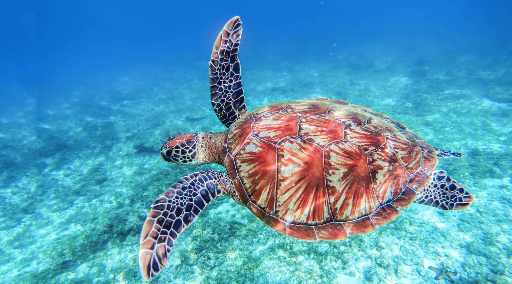
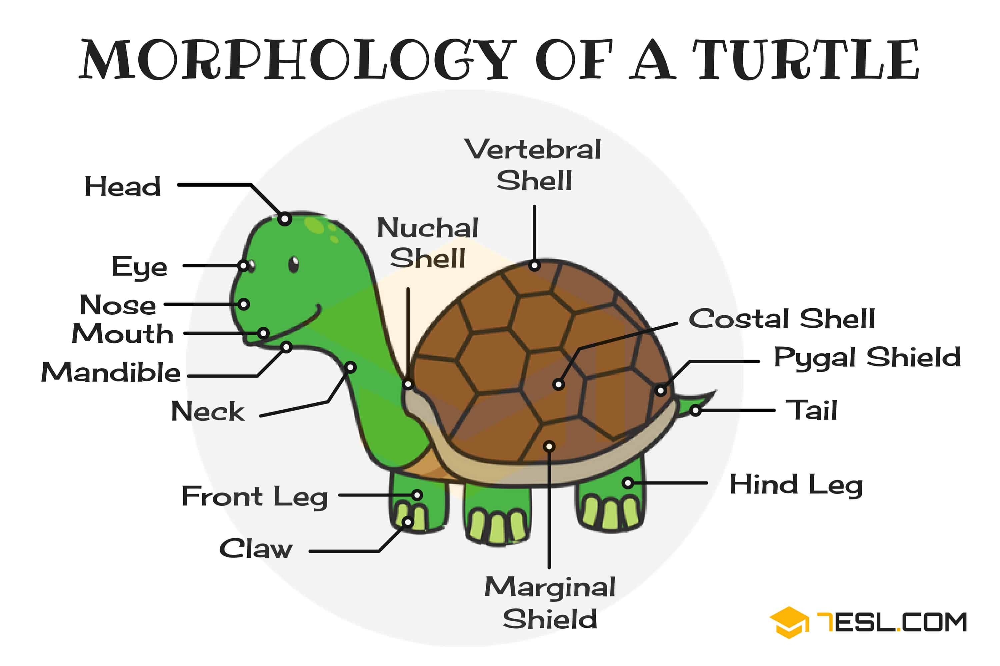
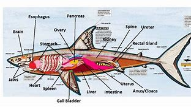
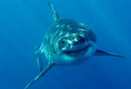
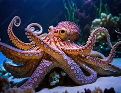
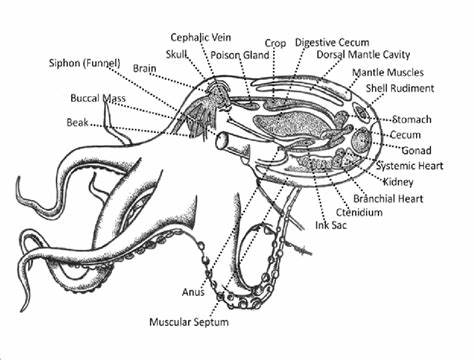

Saltwater fish, also called marine fish or sea fish, are fish that live in seawater. Saltwater fish can swim and live alone or in a large group called a school. Saltwater fish are very commonly kept in aquariums for entertainment. Many saltwater fish are also caught to be eaten, or grown in aquaculture. However, many fish species have been overfished and are otherwise threatened by marine pollution or ecological changes caused by climate change. Diet
Turtle
 Turtles are reptiles of the order Testudines, characterized by a special shell developed mainly from their ribs. Modern turtles are divided into two major groups, the Pleurodira (side necked turtles) and Cryptodira (hidden necked turtles), which differ in the way the head retracts. There are 360 living and recently extinct species of turtles, including land-dwelling tortoises and freshwater terrapins. They are found on most continents, some islands and, in the case of sea turtles, much of the ocean. Like other amniotes (reptiles, birds, and mammals) they breathe air and do not lay eggs underwater, although many species live in or around water.
Shark
 Sharks are a group of elasmobranch cartilaginous fish characterized by a ribless endoskeleton, dermal denticles, five to seven gill slits on each side, and pectoral fins that are not fused to the head. Modern sharks are classified within the division Selachii (or Selachimorpha) and are the sister group to the Batoidea (rays and skates). Some sources extend the term "shark" as an informal category including extinct members of Chondrichthyes (cartilaginous fish) with a shark-like morphology, such as hybodonts. Shark-like chondrichthyans such as Cladoselache and Doliodus first appeared in the Devonian Period (419–359 million years), though some fossilized chondrichthyan-like scales are as old as the Late Ordovician (458–444 million years ago). The earliest confirmed modern sharks (selachimorphs) are known from the Early Jurassic around 200 million years ago, with the oldest known member being Agaleus, though records of true sharks may extend back as far as the Permian.
Octopus
 An octopus (pl.: octopuses or octopodes[a]) is a soft-bodied, eight-limbed mollusc of the order Octopoda (/ɒkˈtɒpədə/, ok-TOP-ə-də[3]). The order consists of some 300 species and is grouped within the class Cephalopoda with squids, cuttlefish, and nautiloids. Like other cephalopods, an octopus is bilaterally symmetric with two eyes and a beaked mouth at the centre point of the eight limbs.[b] An octopus can radically deform its shape, enabling it to squeeze through small gaps. They trail their appendages behind them as they swim. The siphon is used for respiration and locomotion (by water jet propulsion). Octopuses have a complex nervous system and excellent sight, and are among the most intelligent and behaviourally diverse invertebrates.